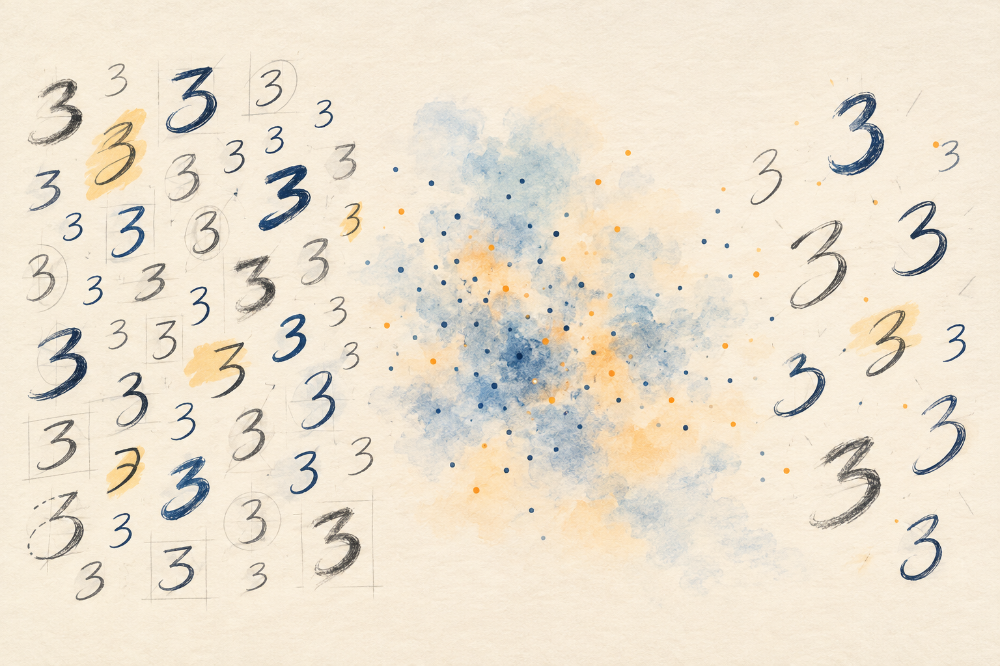
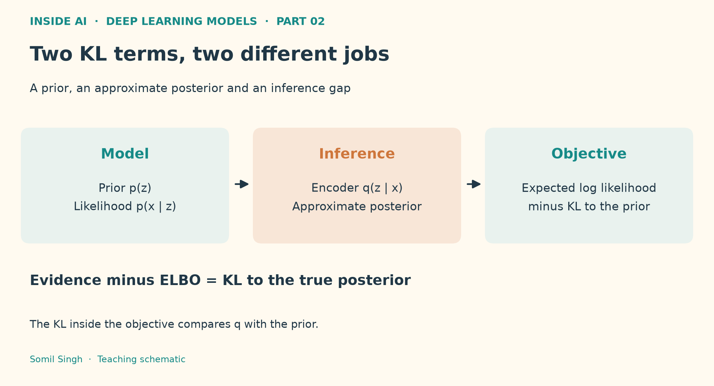
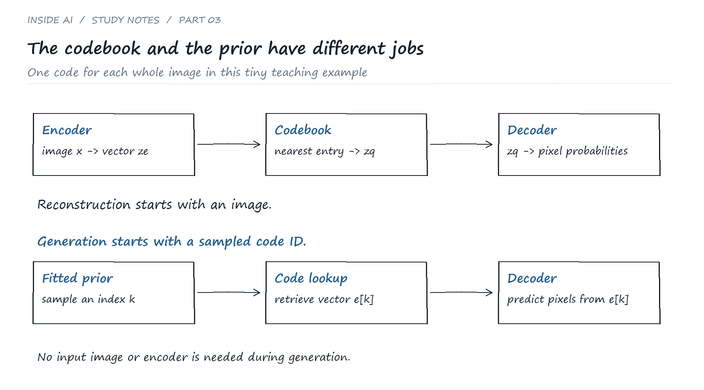
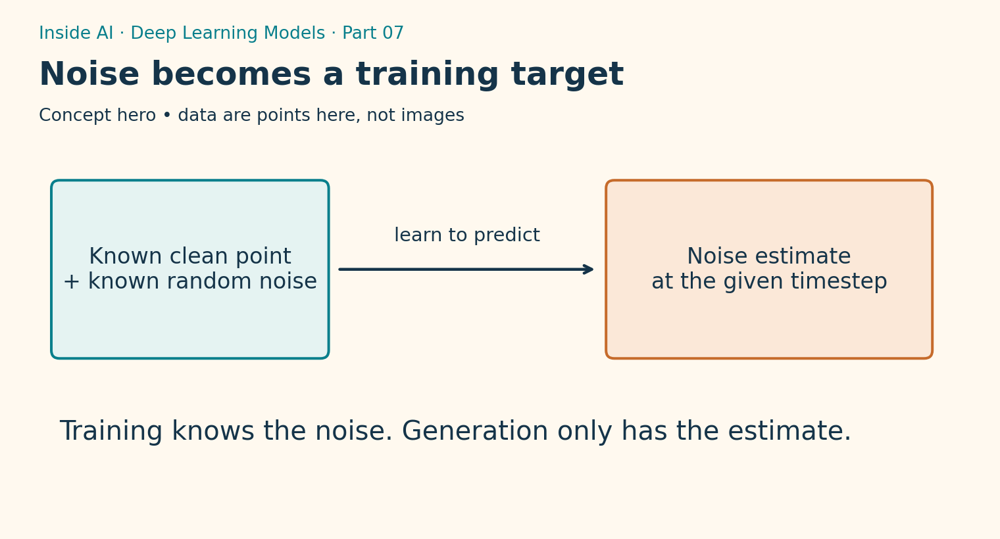
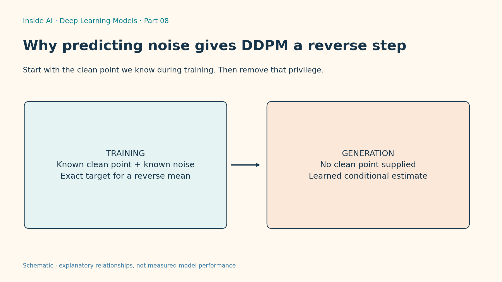
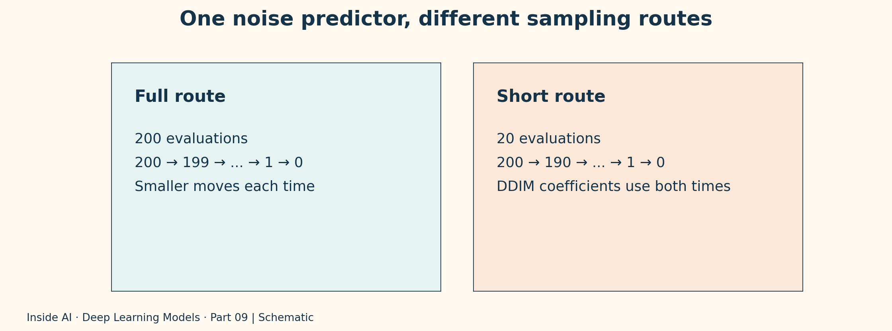
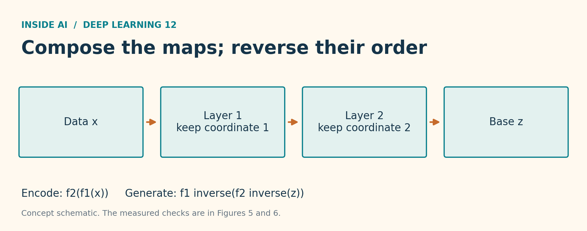
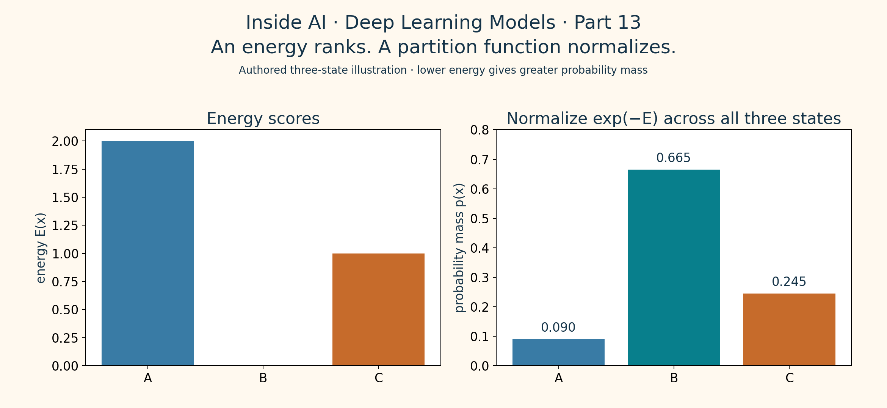

Part 01 · Deep Learning ModelsOverview
How VAEs Learn to Generate New Images
An encoder, a decoder and a space between them. See how a VAE trains and generates, with diagrams, PyTorch and actual output.
I’m upskilling in AI, ML, DL, CV and robotics and bringing yall along. Sharing what I learn from the ground up, with diagrams and code to help you build projects and get interview ready alongside me. Sharing is caring ❤️
Step inside ↓Start with the overview and code. Then let’s connect the dots with the maths behind them.
13 notes

An encoder, a decoder and a space between them. See how a VAE trains and generates, with diagrams, PyTorch and actual output.

Read Part 01 first, then unpack the maths behind its code: KL divergence, the ELBO and reparameterization, with numerical checks.

Choosing an image code is one problem. Learning which codes to sample is another. Codebook selection, gradient routes and a recorded PyTorch experiment.

Trace nearest code selection, stop gradients, commitment and discrete priors with six visual notes and a small reproducible VQ VAE gradient check.

Trace GAN generator and discriminator updates, detach and input gradients. Inspect a reproducible four cluster example with recorded output and clear limits.

Compare the two generator objectives, derive the ideal discriminator and inspect a recorded numerical gradient check with six original figures.

Train a small diffusion model, generate 4,096 points and inspect its limits with six figures, three code steps and the recorded CPU output.

Derive one reverse distribution and check the gradient with actual numbers. Then remove the clean point and see what the model has to learn instead.

Keep the noise predictor fixed and compare 200, 20 and fewer sampling calls. Full code, actual output and six figures show why balanced cluster counts can hide a change in spread.

Check the DDIM variance budget, noise-prediction objective and one-step sensitivity. The full derivation, three runnable checks and six figures retain the recorded toy results and their limits.

Fit a tiny reversible flow on CPU. Full code, actual output and six figures connect the density calculation to the route back.

Compose two coupling layers, trace the gradient and check the probability bookkeeping before trusting the fit. Six figures, runnable code and recorded output retain the toy model limits.

Build an energy-based model you can normalize exactly, check its learning gradient and see where a good optimizer still leaves a bad fit.
No notes match that search. Try VAE or clear the filter.
Starting with generative AI. VAE, VQ VAE, GAN and diffusion are already in the library. Pick a model and follow along.
What’s happening in AI and why it matters. Lemme connect the dots, with the original research and announcements linked.
Five verified Inside AI notes on Deep Review, Earth AI, HiRO-ACEv2, Apertus and LangSmith, with primary sources, reported limits and actual X/company posts.
Read the sources and posts ↗I’m an AI engineer @ Oracle and I’m actively upskilling in the fields I’m passionate about. Inside AI is where I share what I learn, from foundational models to new research.
From my notes to your next project. Expect model explainers, diagrams and code for projects and interview prep. Questions are welcome. If something clicks, share it with a friend ❤️
Build intuition before diving into the maths.
Connect the ideas to runnable code and actual output.
Read the sources and separate reported claims from verified results.
Content and marketing support for AI and tech brands. Project scope and pricing are agreed individually.
Brand positioning, audience research, content strategy and editorial planning.
X and LinkedIn launch copy, technical explainers, product stories and article repurposing.
Analytics reviews and content improvements, with clear metric definitions and honest result reporting.
Each platform gets a different side of me. AI, tech, code and a little fun along the way ❤️